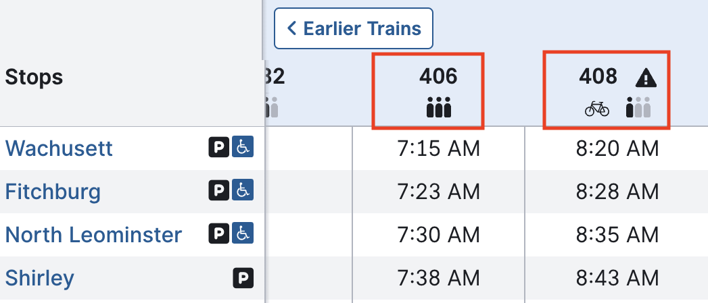
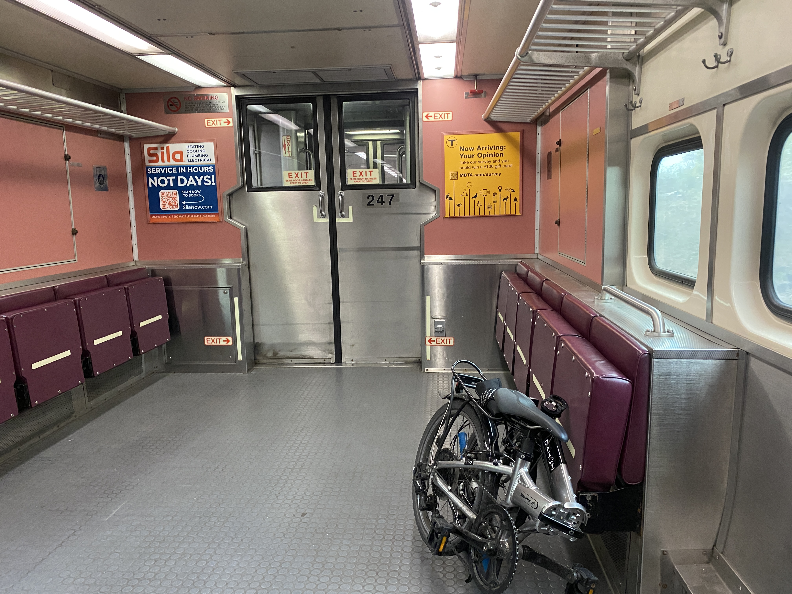
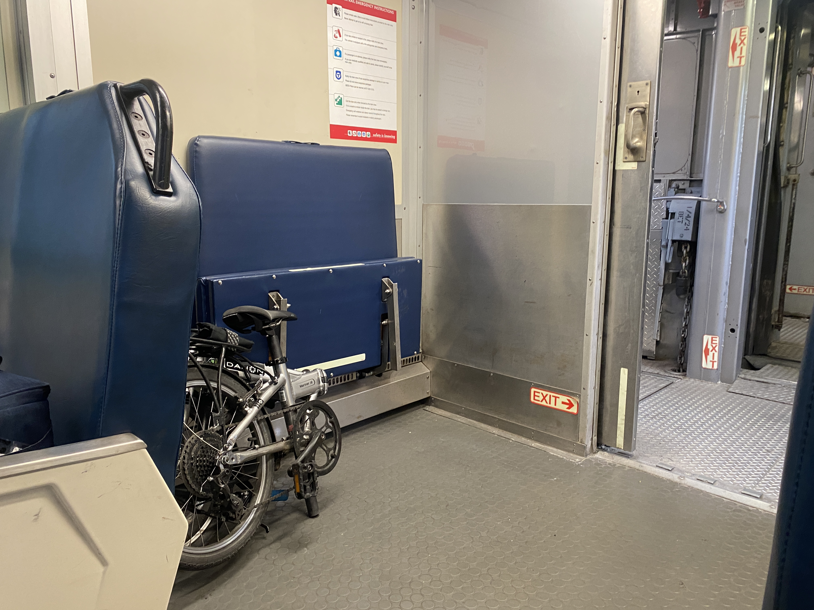
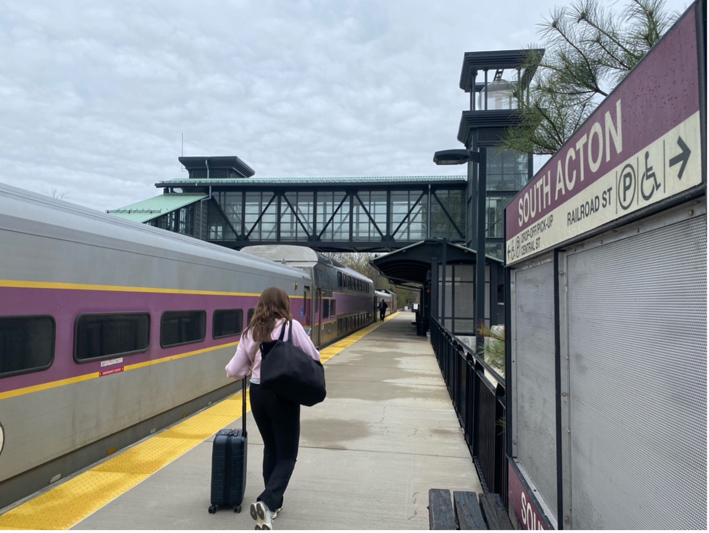
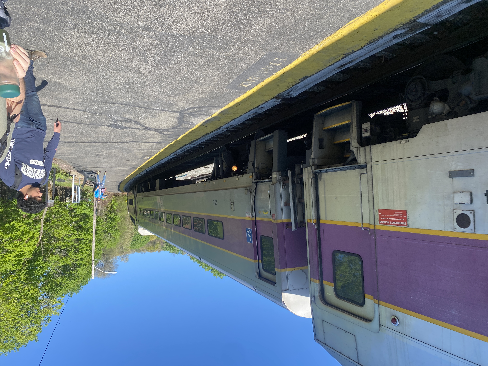

If you’re like I was three years ago, commuting to Maynard without a car may not seem possible, let alone pleasant. However, once you learn which bike trails can connect you to the Fitchburg Commuter Rail line, you can trade the time you spend sitting in traffic on Route 2 for some light exercise on your bike and a relaxed ride on the train.
The goal of this page is to catalog the resources you might need if you want to try traveling to Maynard using both the commuter rail and a bicycle. The bicycle routes listed on this page connect to downtown Maynard and to many of the train stations along the Fitchburg Line. I have only listed routes that you can ride safely at any speed with little to no interaction with car traffic.
On this page you will find general information about the Fitchburg line, the trail connecting Maynard to South Acton Station, and many other stations along the Fitchburg line that connect to safe bike routes.
Downtown Maynard has a direct connection to South Acton Station on the Fitchburg Commuter Rail line via a dedicated biking and walking path, the Assabet River Rail Trail. This path is separate from car traffic and is relatively flat. You can travel between the Mill and Main office complex and South Acton station in under fifteen minutes, even if you bike at a relaxed pace to avoid sweating.
South Acton station has elevated boarding platforms. There is a pedestrian bridge that crosses between the inbound and outbound platforms connected by elevators and stairs. The bridge and the elevators are all large enough for a full-size bicycle.
The short boardwalk section of the Assabet River Rail Trail can be slippery when wet. Slow down before you round the corner!
See the MBTA’s website for timetables with a full list of stations.
The Fitchburg Commuter Rail Line starts at Boston’s North Station and runs west to Wachusett. In the morning, trains towards South Acton depart most stations approximately once per hour. Likewise in the evening, trains away from South Acton leave most stations once per hour.
There are multiple ways to pay for a commuter rail ticket:
Folding bikes and compact scooters are always allowed on Commuter Rail Trains.
Full-size bicycles are only allowed in the “reverse-commute” direction. You can bring a full-size bike onto the train in the morning if you start closer to Boston and take the train outbound. In the evening, you can bring your bicycle onto the train again for the journey back towards Boston.
Full-size bicycles are not allowed on rush-hour trains going towards Boston in the morning or away from Boston in the evening. Timetables on the MBTA website display whether bicycles are allowed on each train.
A timetable on the MBTA website. In the Inbound direction, the 406 train does not allow full-size bicycles, but the 408 train does.
Most train cars on the Fitchburg line have space to fit at least one full-size bicycle near each entrance. On the rare occasion that there are already too many bikes in your train car, the train conductors will direct you to another car where more space is available.
If you are bringing a full-size bicycle onto a train, I strongly recommend that you bring a bungie cord or an elastic ski strap with you. You can attach one end of the strap to the frame of your bike and attach the other end to a handle or luggage rack inside the train car. This will keep the bike upright while the train is in motion.
 It all depends on the station where you board or disembark.
Elevated platforms provide the easiest way to board the train, as you can simply roll your bicycle from the platform onto the train car.
At non-elevated platforms, you must carry your bicycle up or down steep and narrow stairs between the platform and train car. This can be difficult with a full-size bicycle. If you plan to board or disembark at a station with non-elevated platforms, make sure you are comfortable carrying your bike and bags up and down stairs.
Stations with elevated platforms are marked as accessible on MBTA timetables. In the following sections, I list whether elevated platforms are available at each station.
Elevated boarding platform at South Acton.
Non-elevated boarding platform at Belmont.
You can expect to find other cyclists using the train most often during late spring and early fall, when Brandeis University is in session. The Fitchburg line can be particularly busy traveling from North Station to Brandeis/Roberts in the morning.
If you ever need to lean your bike up against other bikes, be ready to move it out of the way when someone else needs to access their bicycle and disembark.
Long segments of the Bruce Freeman Rail Trail south of West Concord are still under construction. By the end of 2024, the southern end of the trail will extend to Station Road, near Route 20 in Sudbury. Travel times for finished connections are listed below.
Downtown Concord is connected to downtown Bedford by the Reformatory Branch Trail, a dirt trail through the Great Meadows National Wildlife Refuge. Downtown Bedford is connected to two more trails:
The example map above only extends as far as Lexington. The towns closer to Boston have shorter routes to stations other than Concord.
There are no dedicated bike paths or protected bike lanes close to Lincoln station as of May 2024.
There are no dedicated bike paths or protected bike lanes close to Brandeis/Roberts station as of May 2024.